I solve business problems with computers.
Teams with deep domain expertise often need a different skillset to get from prototype to production and I'm the person who bridges that gap. At A10, I wrote endpoint agents for five operating systems and engineered the release to production to unblock their AI Firewall team, then rebuilt the legacy SaaS WAF into a high-performance edge sensor and identified a market gap no competitor had addressed. Four platforms built from scratch across three companies. The deep dives below tell the full story.
The business problem: A10 had told the German government they'd have GDPR-compliant on-prem deployment by end of year. The legacy ThreatX architecture was an 8-hop cloud pipeline that couldn't do it. Every detection decision required a round trip to a SaaS backend. Meanwhile, A10's 7,700 existing customers needed on-prem to get a complete security solution on a single device. Two problems, same root cause: the product was dependent on cloud infrastructure that not everyone could or would use.
The result: I replaced a dozen networked services with a single Rust binary on Cloudflare's Pingora framework. All decisions at the edge in 450μs (4,400× faster than the cloud-based model). Then I built a fleet management and collective defense command plane that works self-hosted or as a SaaS upsell. The product went from cloud-only to deployable anywhere (on-prem, air-gapped, or SaaS) from the same codebase. Later, I embedded the AI Firewall team's LLM detections into Synapse alongside response scanning and sensitive data protection, absorbing their product and eliminating the need for separate endpoint agents and a central gateway.
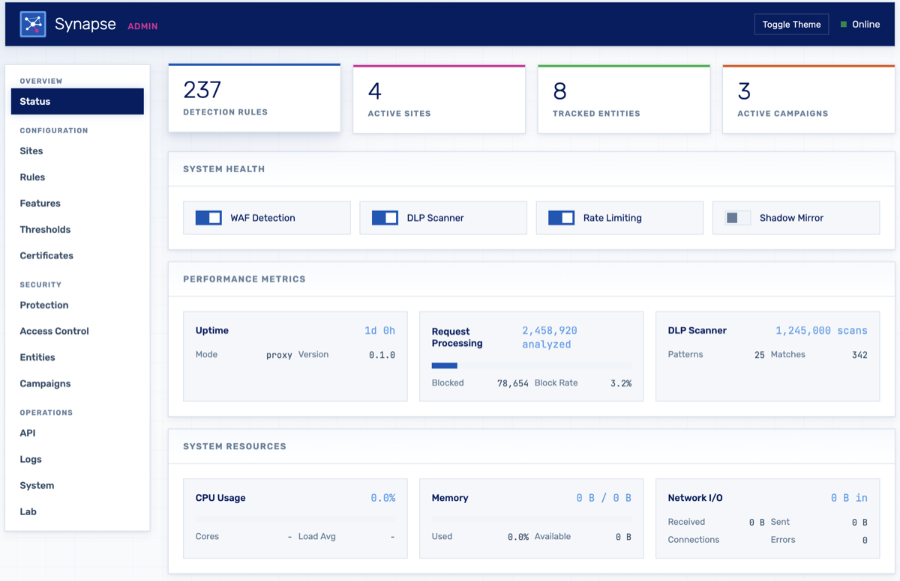
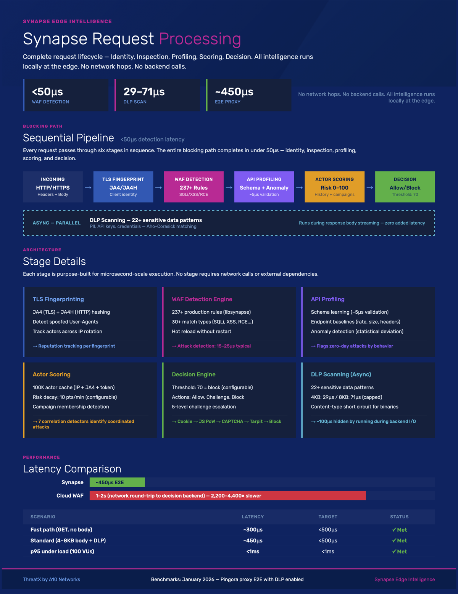
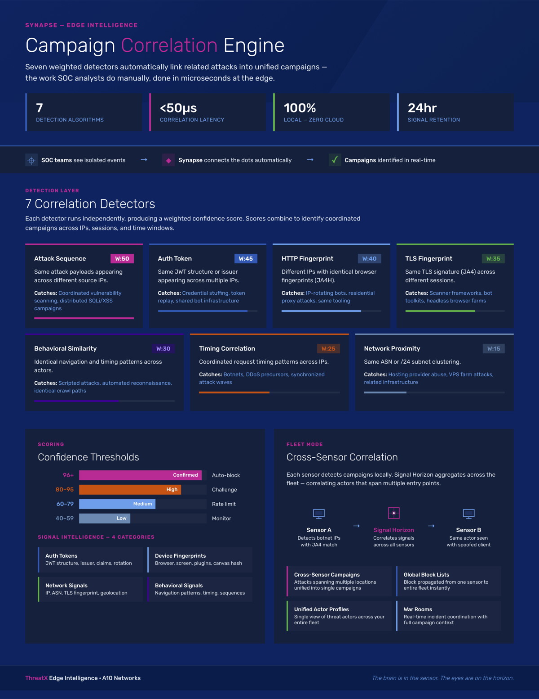
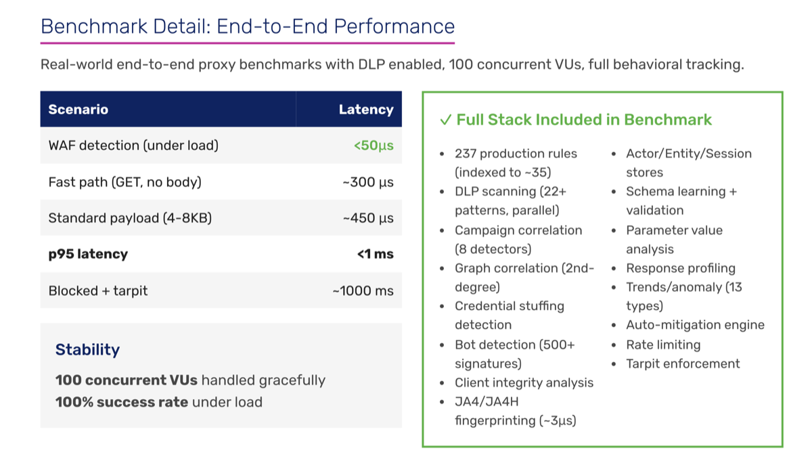
The legacy architecture it replaced: sensor to Kafka to ETL to MongoDB to the HackerMind engine and back. Every detection decision took 1–10 seconds.
Why Rust, not Go or C++? This is a network proxy sitting in the hot path of every HTTP request. Go's garbage collector introduces unpredictable latency spikes, which is unacceptable for a security sensor. C++ would work but doesn't give you memory safety guarantees at the development velocity we needed. Rust gives you both: zero-cost abstractions, no GC pauses, and the compiler catches entire categories of bugs before they reach production.
The detection pipeline runs in ~75μs. Context building (parse method, URI, headers, compute feature flags) → actor store lookup → credential stuffing check → profile anomaly check against endpoint baselines → candidate selection via bitmask index (filters 237 rules down to ~35 candidates) → rule evaluation with short-circuit on first false → entity tracking with time-decay risk scoring → verdict. The bitmask indexing alone skips 90%+ of rules. Candidate caching gives ~1μs hits on the LRU.
Campaign correlation is the interesting part. Most WAFs evaluate requests in isolation. Synapse models attack infrastructure as a connected graph with node types for IPs, JA4 fingerprints, auth tokens, ASNs, user agents. Edge weights quantify relationships: shared token (0.95), shared fingerprint (0.8), same ASN (0.3). Multi-hop traversal discovers indirect relationships: two IPs sharing no direct attribute linked through a third. Campaign fires when 3+ connected nodes with combined weight ≥ 2.0.
DLP scanning uses Aho-Corasick multi-pattern matching, 30-50% faster than sequential regex. 22+ patterns covering credit cards (Luhn validation), SSNs, IBAN (mod-97), API keys, JWTs, private keys, crypto addresses. Content-Type short circuit skips binary. 8KB inspection cap. Benchmarks: ~21μs per 4KB, ~42μs per 8KB.
All worker threads share a single learning state via Arc<RwLock<Synapse>>. Before my rewrite, thread_local! storage meant each thread learned independently. Now all threads contribute to shared knowledge. Internal stores use parking_lot::RwLock, validated at 200 virtual users with zero lock contention. DashMap for lock-free concurrent HashMap where needed.
The business problem: The edge sensor runs standalone, which is the whole point for air-gapped and on-prem customers. But customers with multiple deployments need centralized management, and the real revenue opportunity is cross-customer threat intelligence ("this IP is attacking 5 of our other customers") offered as a SaaS layer on top of the on-prem sensor. Signal Horizon needed to work self-hosted (for customers who won't touch SaaS) and as a managed service (for the upsell). Same codebase, both delivery models.
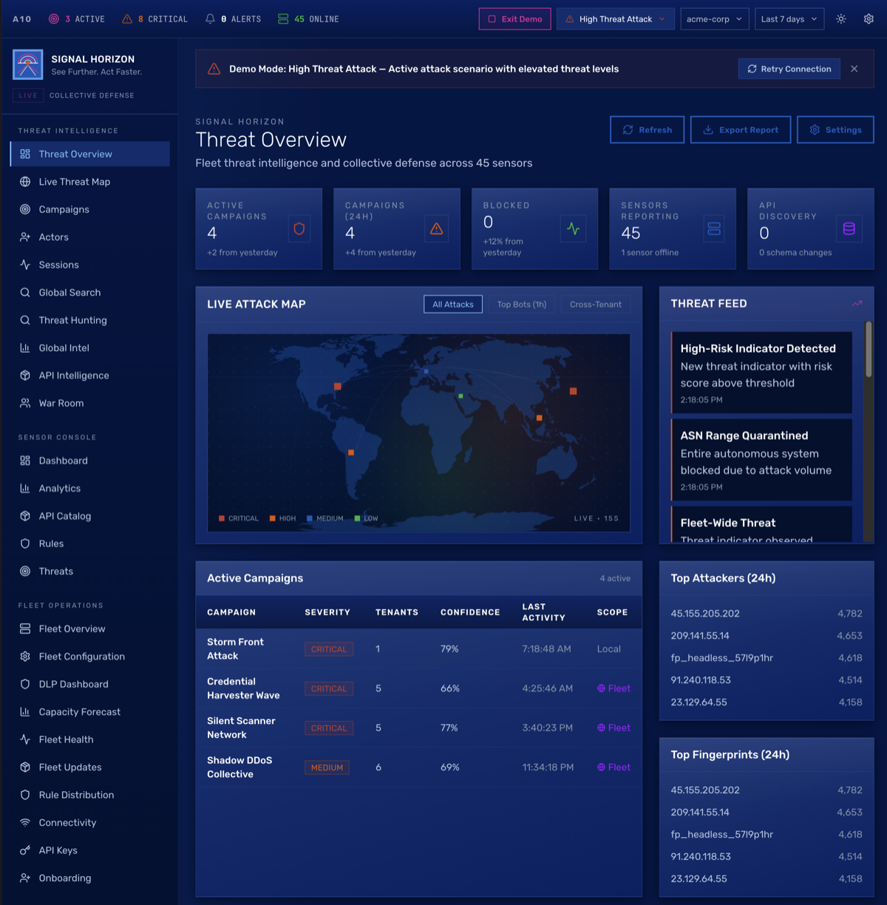
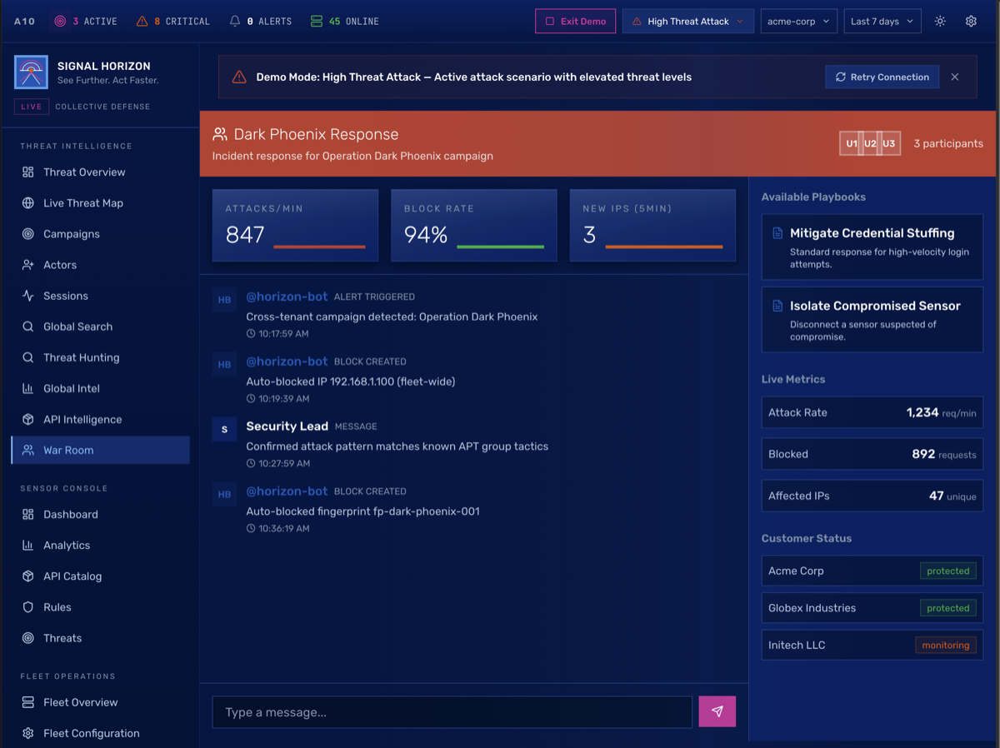
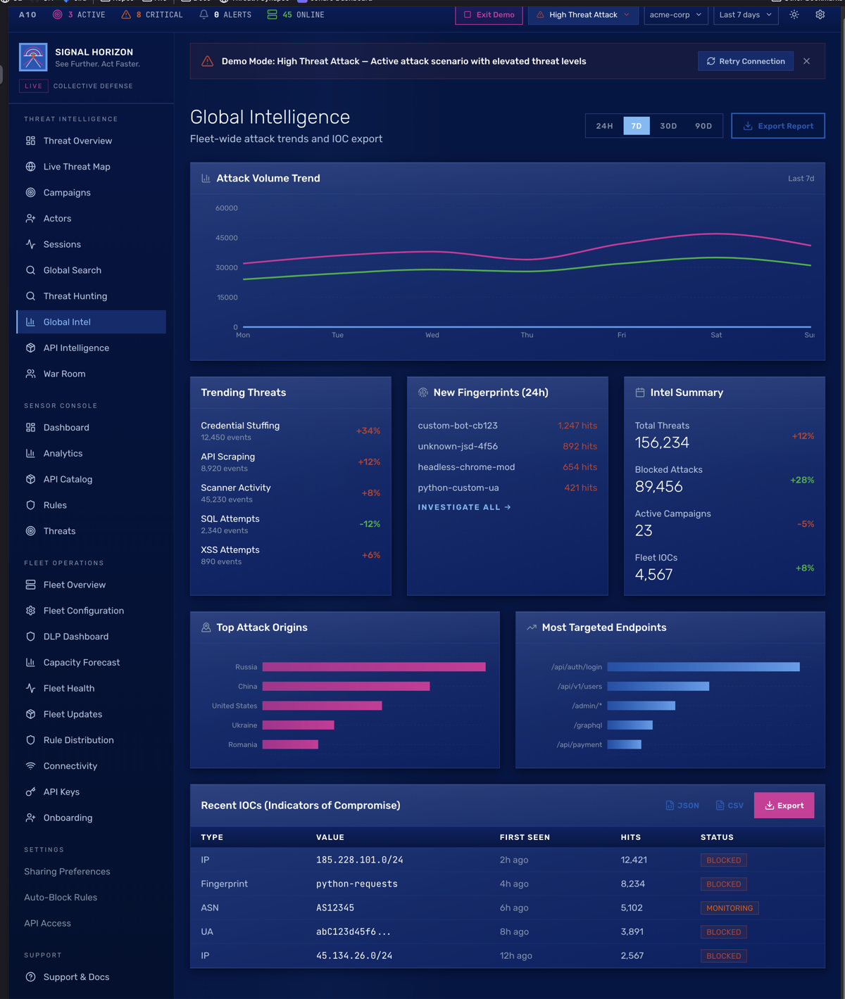
Why ClickHouse? Purpose-built for real-time analytics on columnar data. Sub-second queries across high-volume sensor events at a fraction of the cost of Elasticsearch. Column-oriented storage compresses security event data exceptionally well. IPs, attack types, status codes have high cardinality but repeat patterns that compress down hard.
Multi-tenant intelligence sharing without exposing raw data. Threat indicators get HMAC-SHA256 hashed with a tenant-specific key before leaving the boundary. The receiving side can correlate patterns (same hash means same indicator) without seeing the underlying data. "This IP is attacking 5 other tenants" without anyone knowing who.
Fleet management breaks into four components. FleetAggregator handles metrics and health scoring (0-100) with regional views. FleetCommander manages direct commands, broadcasts, and execution tracking through a full lifecycle (pending → sent → success/failed). ConfigManager maintains versioned templates across Prod/Staging/Dev with drift detection. RuleDistributor handles rollouts: immediate, canary (10→50→100%), or scheduled.
War Room is the real-time incident response workspace. Collaboration timeline, Quick Block tool with auto-tagging, fleet-wide block push, campaign association. Horizon Bot auto-creates rooms when high-severity campaigns are detected. The workflow (escalate, investigate, contain, resolve with post-mortem) is designed for the 24/7 SOC team that actually lives in this tool.
Sensors communicate over persistent WebSocket. Bidirectional: commands, config, and rules push down; events and signals push up. Batched telemetry with circuit breaker, exponential backoff, and event queuing on failure. If Signal Horizon goes unreachable, every sensor operates fully autonomously.
The business problem: A10's AI Firewall team had built protections against AI agent abuse and data exfiltration. Their LLM researchers were domain experts, but shipping to enterprise customers required networking, release engineering, cross-platform deployment, and kernel-level driver expertise they didn't have. They would have needed 3–5 specialists. It was the company's P1 priority and it was stalled.
The solution: I wrote v1 endpoint agents for all five target platforms (Windows, Linux, macOS, iOS, and Android) with kernel-level drivers and tamper resistance. I managed the full release lifecycle: EV code signing, MSI packaging, macOS notarization, SmartScreen reputation, MDM enterprise deployment for each target. This unblocked the team to start shipping.
Then the story got more interesting. My edge sensor (Synapse) already had response scanning and sensitive data detection, exactly the capabilities the AI Firewall team needed. I embedded their LLM detections into Synapse, moving everything to the edge and eliminating both the endpoint agents I'd written and the need for a central gateway. Same pattern as the API security product: collapse complexity into the edge.
Linux: eBPF for traffic interception, Rust userspace for event processing and control plane communication, systemd integration for deployment. Why eBPF over a kernel module? Safety: runs in a sandboxed VM with a verifier, can't crash the kernel. Portability: CO-RE (Compile Once, Run Everywhere) works across kernel versions without recompilation. Operations: attach and detach without reboots. When you're deploying across diverse customer environments with different kernels, those properties matter more than raw flexibility.
Windows: v1 shipped with WinDivert for traffic interception using a third-party certificate, packaged as MSIs. Hardened v2 with our own EV code signing certificate, which means reputation management with Microsoft SmartScreen, a hardware FIPS device to store the key, and all the compliance that comes with it. Runs as a Windows protected service, deployed through standard MDM solutions.
macOS: Requires an Apple developer account and approved network extension entitlements before you can even begin real development. If you've never navigated Apple's entitlement approval process for privileged network access, just know it's a gating factor that blocks most teams for weeks.
The number of people who have shipped privileged, tamper-resistant agents to all five major platforms and know where the landmines are on each is very small. I'd already released production software to every one of them at Vispero. That's what made it possible to write MVPs fast enough to start shipping while defining the roadmap for hardened versions. The career arc matters here: the raw cross-platform build engineering I did at Vispero is what made the A10 work possible.
A major customer ran 400+ self-hosted sensors and handled 150K requests per second on Tuesdays alone. The initial attempt to cut over their production traffic lasted minutes before catastrophic failure. The response from the team was two weeks of planned NGINX optimizations in the sensor.
The problem wasn't NGINX. But nobody knew that yet. We had never actually validated the sensor at that traffic volume before attempting the cutover. So I built a test harness: stood up a Fargate cluster to generate load and pointed it at a sensor to reproduce the failure under controlled conditions.
Logging wasn't in place for this. So I logged into a sensor and ran dmesg. Wall of text: table full, dropping packet. Got it.
The connection tracking table, where the Linux kernel's stateful firewall (netfilter) tracks unique IP addresses, was exhausting. This isn't active connections. Every IP that touches the sensor gets an entry: blocks, drops, everything. At 150K RPS with the traffic diversity of a major retail site, the default table size fills fast. Disabling conntrack wasn't an option because we were running Docker, which depends on it.
The fix was a systemd service that calculates the conntrack table size dynamically based on available memory and sets it before the network stack comes up. No NGINX tuning required. After the change, sensors handled 150K RPS without breaking a sweat.
The issue had survived one prior failed onboarding attempt. Nobody found it because the symptoms look like a network problem. Application monitoring shows healthy services, the sensor process is fine, and the drops happen at the kernel level before traffic ever reaches userspace. You only find it if you know to check /proc/sys/net/netfilter/nf_conntrack_count. And you only reproduce it if you actually generate enough traffic to fill the table, which requires a purpose-built load test that nobody had done.
The fix enabled the contract. That diagnostic methodology (build a harness, reproduce at scale, look below the application layer) became how I approach problems by default. It's a straight line from this to how Synapse was designed: every decision at the edge, kernel-level awareness built in.
What I walked into: Every customer sensor (and customers could have multiple) consisted of its own VPC. Yes, its own VPC. Inside each: an auto-scaling group of 2 EC2 instances (using credit-consuming instance types incorrectly), each running a single Docker container of the WAF. Because the instances were in a private subnet, every sensor got 2 NAT gateways and 4 Elastic IPs, plus a load balancer. Customers on-boarded by pointing their DNS at the ELB and whitelisting those 4 EIPs.
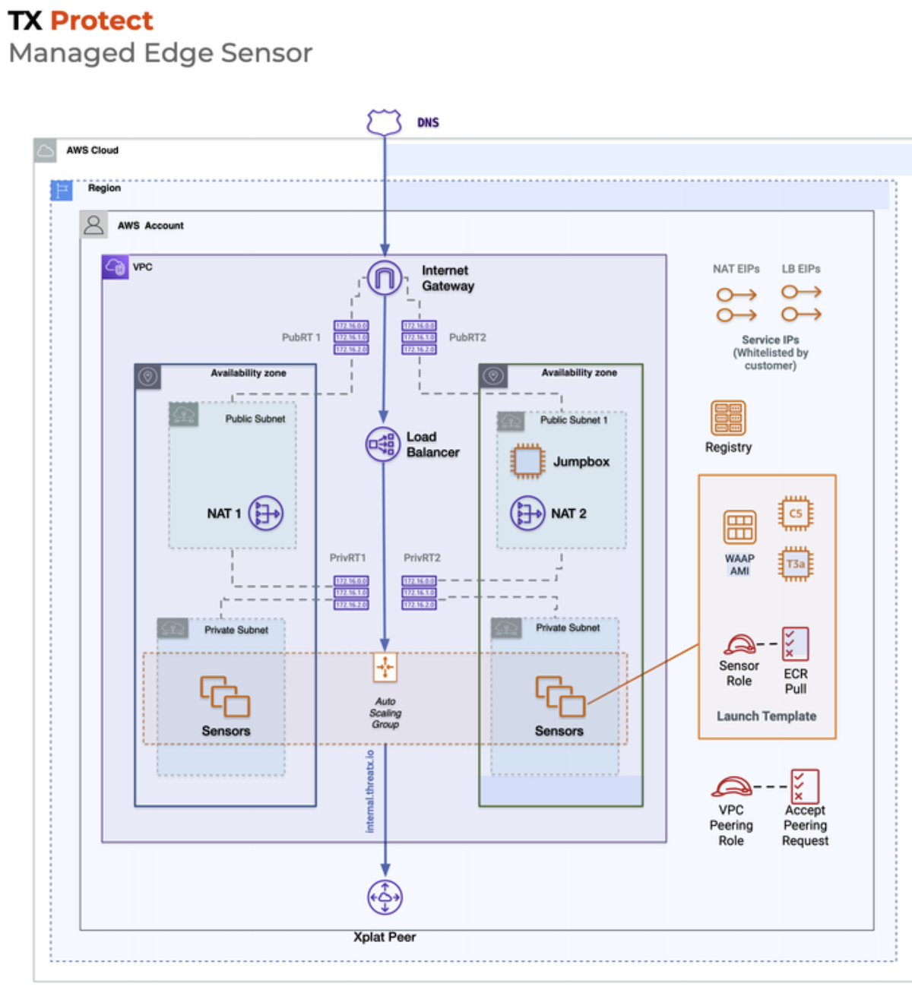
It gets worse. The ASGs were set to scale on CPU utilization. A reverse proxy should scale on connections. CPU tells you almost nothing useful. But because spinning up new instances took so long, the threshold was set at 40% CPU. Any time a customer's sensors scaled, you got 2–3x wasted capacity costing anywhere from $70K–$300K a year depending on the customer. EBS volumes attached to EC2 instances were not being deleted when instances terminated. Elastic IPs were not being released when sensors were decommissioned. AWS service quotas were becoming a recurring problem because of the VPC-per-sensor model.
The deployment story was equally painful. Sensors were deployed through a collection of Python scripts with no discernible expected input or output, CloudFormation templates that used both parameters AND Jinja templating, and required making a direct write into another service's database for URLs and IPs to appear in the customer dashboard. If you asked someone to design the most expensive, most fragile way to run a fleet of reverse proxies on AWS, this is roughly what you'd get.
The fix: I replaced the entire architecture with slim Alpine-based containers on Fargate in shared infrastructure. Customers whitelisted a shared pool of IPs instead of per-sensor EIPs. Scaling moved from CPU-based to connection-based. No more VPC-per-sensor, no more orphaned disks, no more leaked EIPs, no more quota issues.
Result: ~50% reduction in monthly AWS spend, roughly $60K/month in savings on a ~$120K/month bill. The bigger win was operational: the deployment process went from a multi-script ritual requiring database writes to a repeatable, automated workflow.
I proposed the role and became ThreatX's first engineer to deliver formal professional services: solution architecture and post-sales integration support for enterprise customers. It wasn't a title change. It was identifying a gap where deals were stalling because nobody could bridge the distance between what the product did and what enterprise environments actually looked like.
I personally delivered four enterprise engagements. The common thread was Microsoft-ecosystem customers that no other engineer on the team could support. That meant debugging IIS integrations, shipping a VMware appliance for a customer that wouldn't run Linux containers, and translating between enterprise IT terminology and product capabilities during pre-sales calls. These weren't support tickets. They were the difference between a closed deal and a lost one.
The broader impact was opening a market segment. Before this, Microsoft-heavy enterprises were effectively off the table. After, sales had a repeatable path into those accounts with engineering support that could speak their language. It established professional services as a revenue-generating capability the company didn't have before.
For context: before joining ThreatX I'd nearly been hired by AWS Professional Services (hiring freeze) and VMware as a Solution Architect. The consulting muscle was already there. This was just the first time I got to apply it inside a product company.
The insight: Every WAF vendor detects authorization attacks: brute force, credential stuffing, token replay. But none of them answer the question: "which of my API endpoints actually enforce authorization, and how is that changing over time?" That's a fundamentally different capability. Detection tells you someone tried to break in. Authorization intelligence tells you which doors are unlocked.
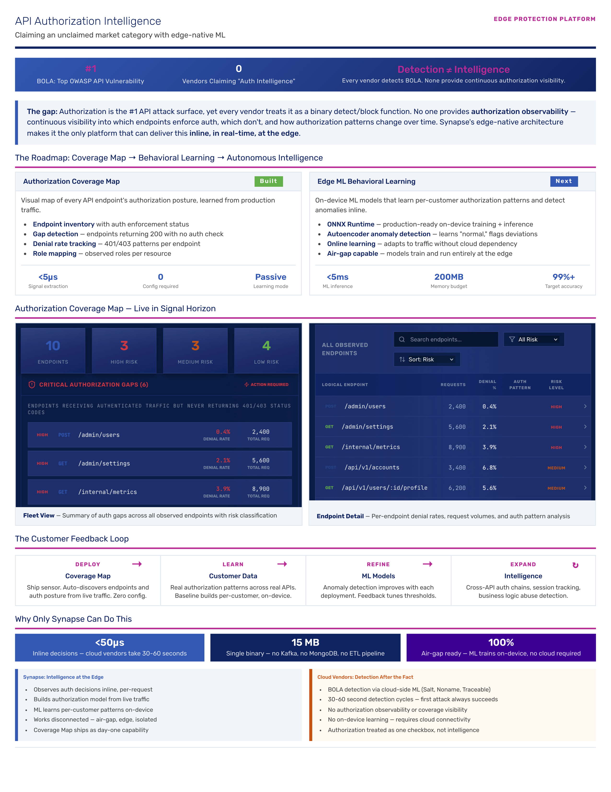
I built the MVP. An authorization coverage map that auto-discovers endpoint auth posture from live traffic with zero configuration. The sensor observes request/response pairs and infers which endpoints require authentication, what auth mechanisms they use, and whether enforcement is consistent. No agents to install, no API specs to import, no manual inventory.
The product roadmap goes further. I designed a local LLM feedback loop that learns per-customer behavioral patterns. Each deployment builds its own model of "normal" authorization behavior for that environment, then flags and blocks anomalies: endpoints that suddenly stop requiring auth, tokens being used from unexpected contexts, gradual privilege escalation patterns that rule-based systems miss.
Why this matters for the business: API authorization is the single biggest category of vulnerability in modern applications (OWASP API #1 and #5). Every enterprise security buyer asks about it. Competitors can only say "we detect attacks against your auth." We can say "we show you your actual auth posture and how it changes." That's a differentiated sales conversation nobody else can have.
This is the kind of thing that happens when the person building the security product is also the person who understands the competitive landscape and talks to customers. A pure infrastructure engineer doesn't identify market gaps. A pure product person can't build the MVP. The gap existed because it requires both.
When I arrived at Vispero, there was no developer platform. Fragile scripts. An end-of-life NAnt build system. If a developer needed a config changed, they filed a ticket and waited. When I left three years later they had a self-service portal, a CLI, Visual Studio plugins, and 600+ automated pipelines.
The core challenge was six target platforms with one framework. Windows, macOS, iOS, Android, Linux, Embedded Linux, each with completely different toolchains. I built a task-based DSL that abstracted platform-specific compilation. A build file declares what to build. The framework resolves how based on target. Windows = MSBuild + EV code signing. macOS = Xcode + notarization. Embedded Linux = cross-compilation. Self-bootstrapping: you could reproduce any build from a clean machine.
The toil elimination was where it clicked for me. Release engineers managed 600+ pipelines configured in XML. They were constantly copy-pasting configuration and templates to create new pipelines for sandboxes, releases, new versions, and all the devs would need them at once. I built a tool using the GoCD API that let you pick two pipelines from a pre-populated list, compare them in the diff tool of your choice, and push changes back up. Simple tool, massive time savings.
Another one: the company was stuck on a heavily customized Bugzilla instance that didn't integrate with CI/CD. Managers were spending hours every week manually updating issues and compiling notifications for QA on every promoted build. No API, just CGI. I made the build pipelines detect all issues in each build, assemble the notifications, and send them automatically.
The artifact repository and release management dashboards replaced the old process of promoting builds by moving them to different folders. Release managers could see all releases available in each channel (local and CDN), view value stream and dependency maps, and the same dependency data powered safe automated cleanup on the CDN. By this point the versioning database, build metrics database, and artifact database were all integrated into a single platform. Built in C#, SQL Server, and ASP.NET Core.
I also rebuilt the legacy license management system (an XML-backed MFC desktop app with 3+ day turnaround) into a C#/ASP.NET web platform with SQL Server. Government deployments worth $2M+ needed audit trails, approval workflows, and compliance reporting that didn't exist. The new system gave authorized users immediate turnaround with auto-approval for pre-authorized renewals.
The hybrid build infrastructure was its own project. AWS control plane scheduling jobs, on-prem VMware spinning up ephemeral agents on SSD arrays, Ansible provisioning them via Kerberos for credential-free WinRM auth into the Active Directory environment, build runs, agent destroyed. Every build got a clean environment. No drift, no "works on my machine." I replaced VMware golden images with Ansible playbooks because golden images are snapshots in time that diverge the moment you deploy them. At 600+ pipelines across six platforms, drift creates impossible-to-debug problems.
Observability came next. Bare-metal monitoring, custom build metrics tracking trends in build size, compile times, failure rates. SQL Server for structured data, InfluxDB and Grafana for time-series dashboards, Beats and Telegraf for collection, plus custom collectors in PowerShell for anything the off-the-shelf agents couldn't reach. This was the foundation for identifying bottlenecks and justifying infrastructure investments with data instead of anecdotes.
The developer experience layer tied it all together. I introduced Jira with a knowledge base that resolved half of incoming requests before they were even submitted. I'm not a fan of intake forms with dozens of fields; it feels like asking users to organize my backlog for me. Most of my forms started with three inputs: a title, "what's the problem?", and "is this blocking your work or impacting customers?" If I needed more context, I'd ask in the comments. Backend automation handled the actual categorization, issue type assignment, and trend tracking. Service and support requests dropped by nearly half again when I introduced self-service pipeline configuration. I started a monthly newsletter and regular platform surveys. The surveys received a 75% response rate, and satisfaction with the platform averaged 4.5/5 in my final year.
Then ransomware validated everything. The corporate network got hit. Took down most of the org for a week. Because I'd migrated all dev services to AWS (source control, build infrastructure, artifact storage), engineering was completely unaffected. Kept shipping. It wasn't designed as disaster recovery. It was a side effect of breaking dependency on corporate IT.
The business context: A10 needed the full product stack (edge sensor, fleet management, endpoint agents, sales tooling) shipped in under a year by one engineer. That's not a workload problem you solve with long hours. It's a methodology problem. Here's what "AI-augmented" actually means in practice: a structured engineering methodology where I lead a team of AI agents the same way a senior engineer leads junior developers. I set the architecture, define patterns, review every output, and make every design decision. The agents implement against my specs, write tests, generate documentation. The quality gates keep them honest.
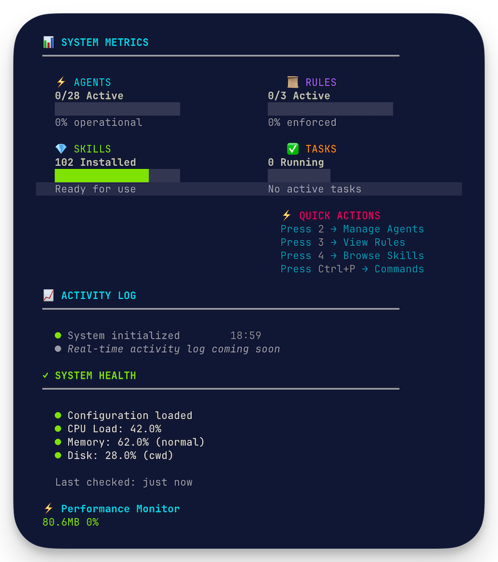
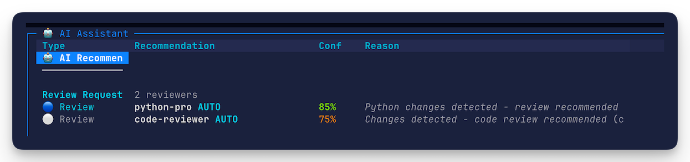
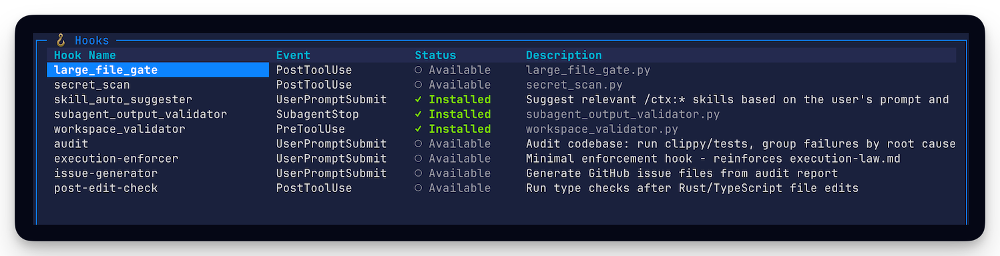
The outer loop is implementation. I define the architecture, write specs, and set patterns. Agents implement against those specs (code, tests, documentation). Same as assigning work to junior developers: clear requirements, bounded scope, review everything before it merges.
Multi-perspective review gates. Every change gets reviewed from multiple angles: security implications, performance characteristics, code quality and pattern consistency. These are separate review perspectives that catch different categories of issues, the same way a security engineer and a performance engineer would see different things in the same PR.
The test gap analysis loop is the interesting one. This isn't code coverage. It's behavioral coverage. A dedicated review agent examines the test suite looking for gaps in behavior testing: are we testing the edge cases? Are there trivial assertions masking real gaps? Is the test actually validating the contract or just confirming the implementation? When agents write tests, those tests go through this review where another agent either approves or requests changes. The effect is quality control on the tests themselves. No rubber-stamp assertions, no tests that pass by coincidence.
Circuit breakers prevent compounding errors. If a review loop flags an issue, the pipeline stops. It doesn't try to self-heal or auto-fix and retry indefinitely. The failure gets surfaced to me with context: what was attempted, what failed, what the reviewers flagged. I make the architectural decision about how to proceed. The system is designed to fail fast and fail loudly rather than silently accumulate technical debt.
The result is 9,775 test cases across the full product stack. Not because I heroically wrote ten thousand tests. Because the methodology made comprehensive testing the path of least resistance. It's harder to skip validation than to do it. That's the point. The agents handle the volume. The gates handle the quality. I handle the architecture and decisions.
I authored all of ThreatX's published documentation, before and after the A10 acquisition. But the more interesting story is how I scaled from doing it all manually to building a platform that made quality documentation a natural byproduct of the development process.
The starting point was unsustainable. I was creating every AsciiDoc file myself and manually editing other people's contributions for quality and consistency. Content review was a bottleneck that scaled linearly with my time. That works when you're small. It doesn't work when every minor product version needs to ship with versioned documentation simultaneously.
So I built the infrastructure to make it scale. Designed the information architecture from scratch: how content is organized, how topics relate to each other, how a user navigates from problem to solution. Developed a custom style guide that codified the voice, terminology, and structural patterns so contributions didn't need me as a quality filter.
Then I automated the enforcement. Built a docs-as-code platform on Antora with automated quality checks using Vale and a custom style guide ruleset. Re-usable AsciiDoc components meant common patterns (admonitions, API references, configuration examples) were consistent by construction, not by review. Contribution templates lowered the barrier for other engineers to write docs that met the standard without my intervention.
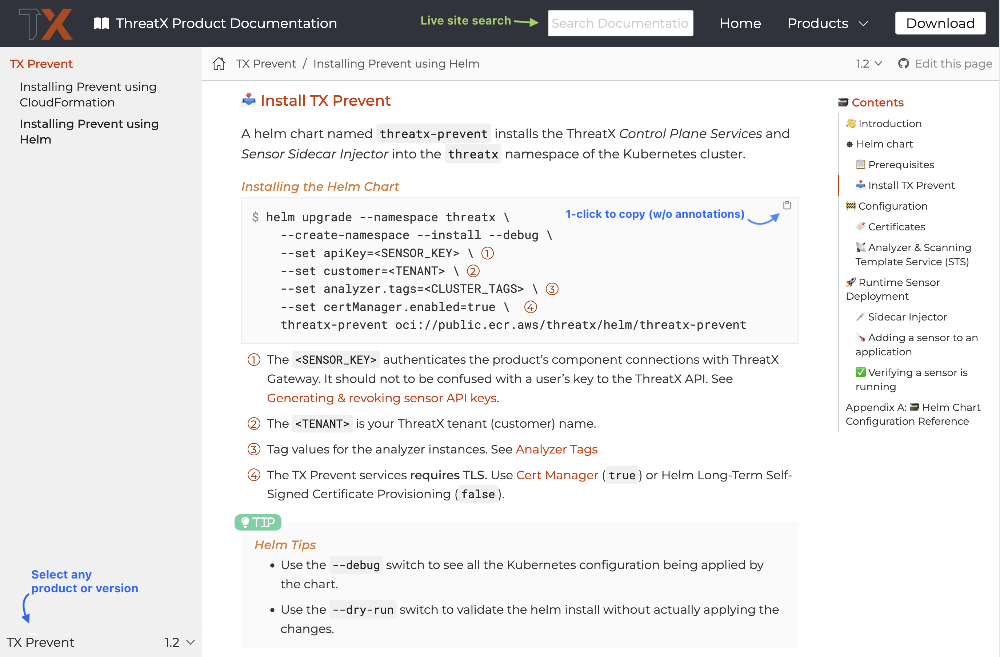
The outcome: every minor version of the product shipped with versioned documentation at the same time. Architecture decision records, operational runbooks, API references, onboarding guides, all maintained in the same pipeline as the code. This was critical for the on-prem product launch, which required customer self-service documentation that had to be complete and correct on day one.
The business problem: A major customer put it bluntly: "We can't show this to our execs." The existing weekly security report was version two of a product that had already failed once. Version one crashed the production database with inefficient queries against a data model that couldn't be queried efficiently to begin with. Version two replaced it with 11 pie charts labeled with numbers that required a separate lookup table to interpret. Customers revolted. Several enterprise accounts demanded the reports be fixed as a condition of renewal.
The rescue. A PM had been managing the redesign with an offshore team but was a month from the end-of-year deadline with nothing shippable. I got asked to take it over. I'd had my eye on these reports for years, waiting for the opportunity. An earlier attempt to rebuild them had been blocked. They thought I just wanted to use Lambda for my own amusement, and not because it was literally designed for this kind of job.
The insight nobody else had: this was an executive report, and nobody had designed it for executives. The people using the WAF every day don't need a weekly summary of what they already saw. They need a document to hand to the people footing the bill that says "this is working" and "here's what happened this week." An executive will read one page if you're lucky. Everything after that is receipts.
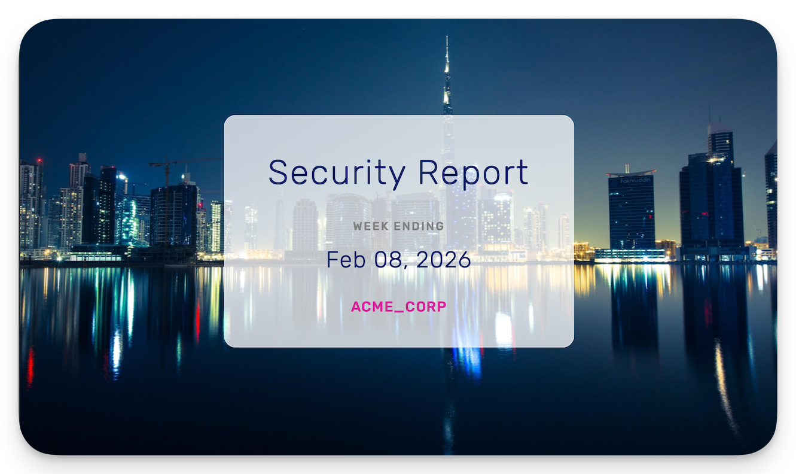
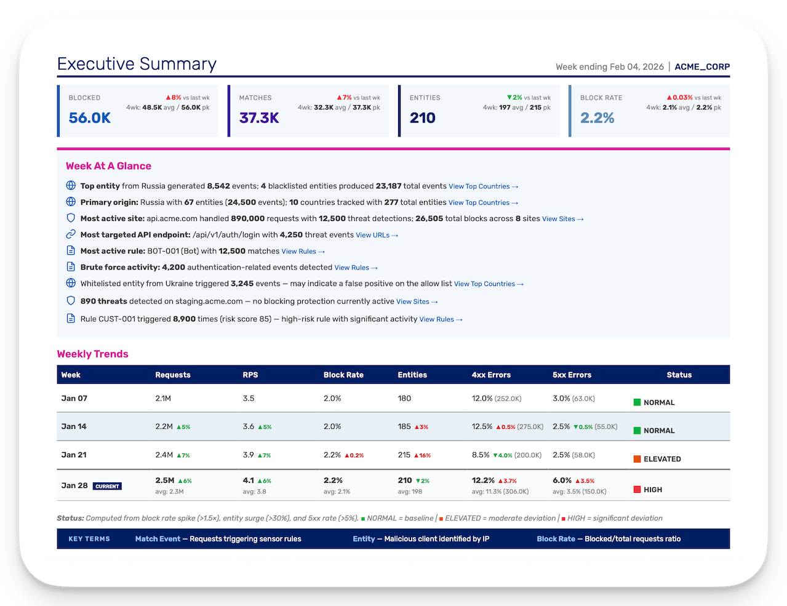
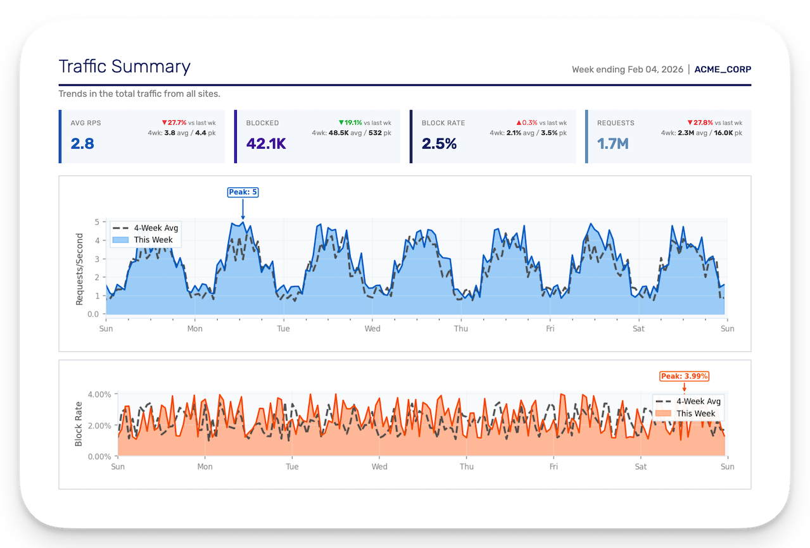
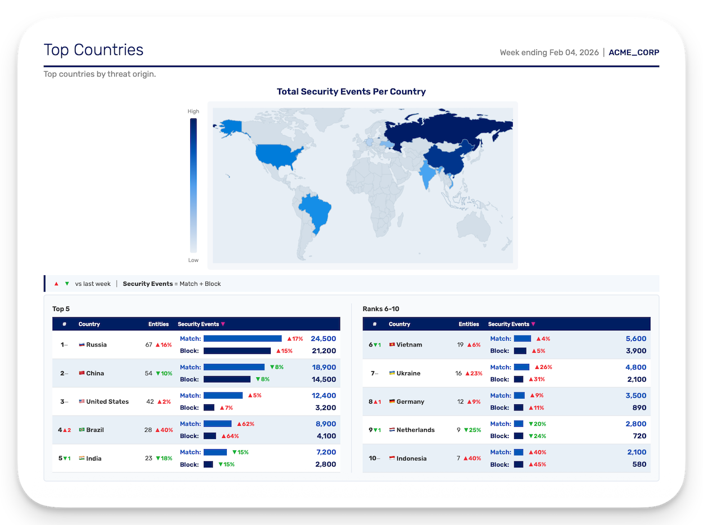
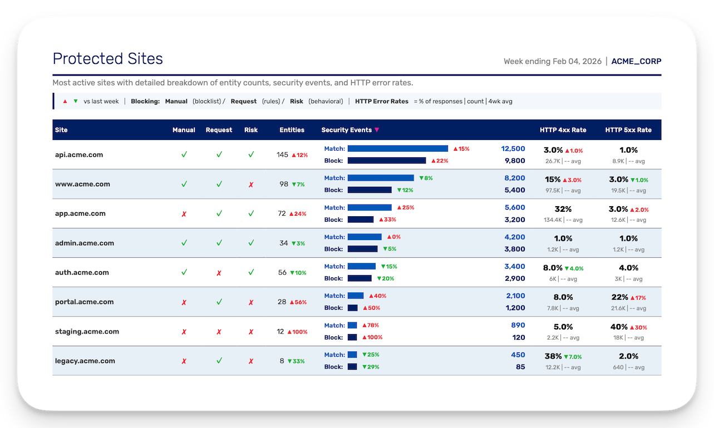
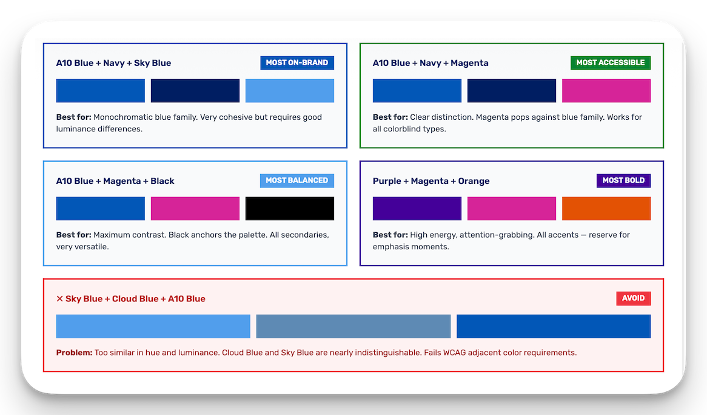
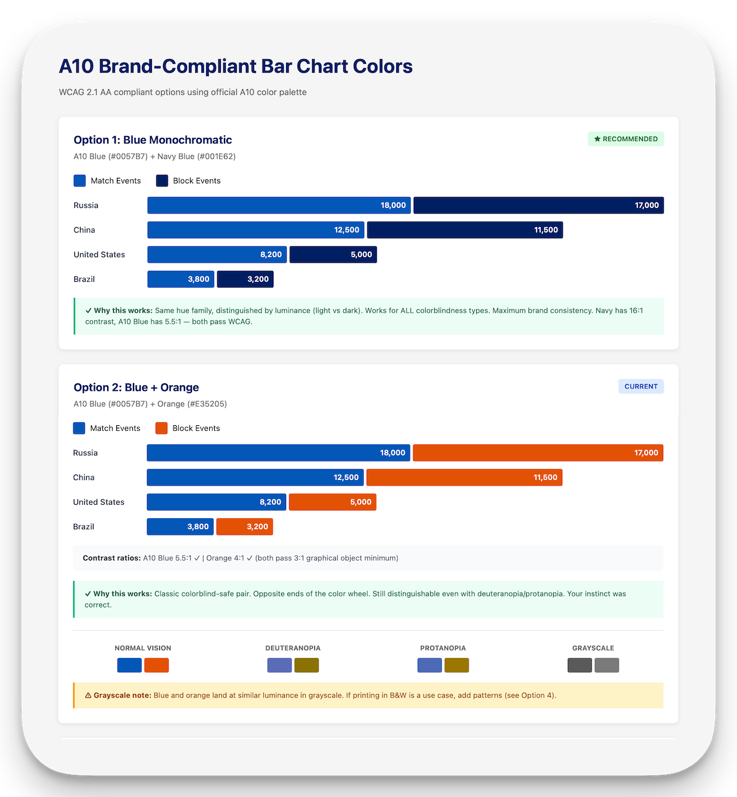
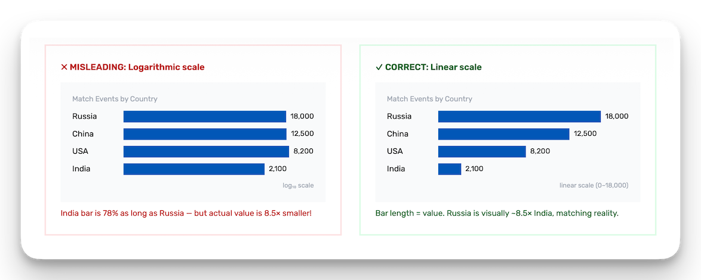
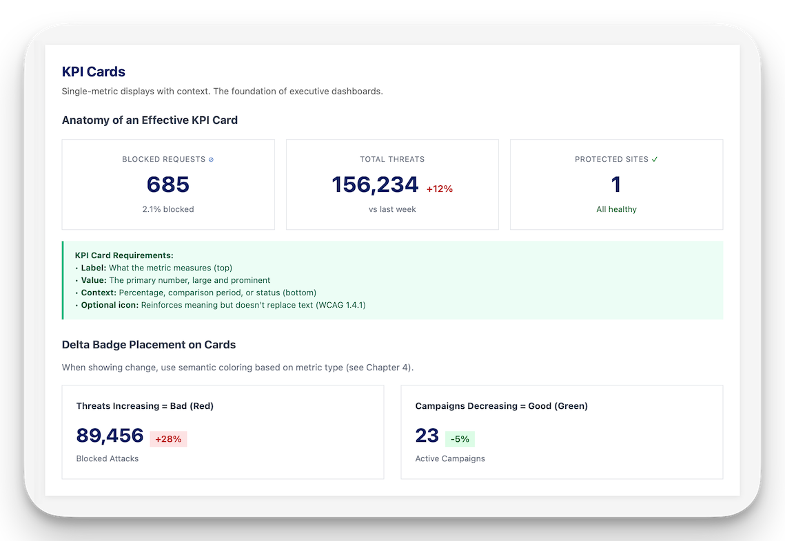
Design principles. The previous reports showed absolute values with no context. A number means nothing without a baseline. I added week-over-week deltas, 4-week averages, and 4-week peaks to every applicable metric. Trending data tells a story; a standalone number is trivia.
The executive summary page was not in the requirements. I added it because nobody had realized that an executive report needs to be readable in 60 seconds. I built 18 possible automated insights: actionable interpretations drawn from each section's data, that dynamically build a prioritized list for each customer each week. Configuration gaps, anomalous trends, whitelisted entities triggering alerts, sites running without blocking protection. If something needs attention, it's on page one. I added a status column to the 4-week trend table. Green means go. Sometimes you only need to read half a page.
Then the non-designers arrived. The words "I'm not a designer, but..." preceded every challenge. The choropleth map became a decorative element supporting a trend-focused table, because an unlabeled choropleth is one of the worst data visualizations you can use. It fails WCAG 1.4.1 by encoding information through color alone, and it's perceptually inaccurate for comparing values. I kept it for geographic context and added horizontal bars for actual comparison.
The logarithmic scale fight was the hardest. Log scales compress large differences, violating Tufte's Principle of Proportional Ink. A bar representing 18,000 events looks 78% as long as one representing 2,100, an 8.5× difference hidden by the scale. The counterargument was that log scales had already shipped elsewhere in the product. I cited Stephen Few, Cleveland & McGill's 1984 perceptual accuracy research, and the fact that Romano et al. (2020) found only 40% correct interpretation on log scales vs. 84% on linear. The log scale did not ship.
WCAG 2.1 Level AA compliance was dismissed as unnecessary because "we've never done that before." The customer's requirements listed "Accessible" in red. Compliance was already built into the design: status badges use text labels alongside color, all contrast ratios meet 3:1 for graphical objects and 4.5:1 for text, and every chart provides redundant encoding. It cost nothing to maintain because it was architected from the start, not bolted on after.
I wrote the documentation to make these decisions defensible. A 46-page Data Visualization & Accessibility Guide covering color systems, chart selection, WCAG requirements, and redundant encoding patterns, all backed by research citations (Tufte, Few, Cleveland & McGill, Nussbaumer Knaflic, Wilke, Ware). A separate Design Decisions document explaining the rationale for every page of the report, structured as "the story this page tells" with key decisions and references. And a brand-compliant color options analysis showing WCAG contrast ratios and colorblind simulations for every proposed palette.
The result: 14-page automated weekly report. Per-customer, branded, generated entirely from sensor telemetry. Executive summary with automated insights. Trend-focused throughout. WCAG 2.1 AA compliant. Replaced both the database-crashing v1 and the pie-chart v2 that caused the customer revolt. Shipped by end of year.
DEVELOPER TOOLS
Cortex: Context orchestration plugin for Claude Code. 29 agents, 49 slash commands, and 100+ skills with an automated recommendation engine that suggests the right skill or agent based on your current task. Features contextual RAG for codebase-aware retrieval, doc-claim-validator (audits documentation claims against actual code), agent-loops (structured implementation with verification gates), and a Python CLI for the full lifecycle. The system behind the AI-augmented development methodology. Docs · GitHub
Facet: AI-powered job search and interview preparation platform. Structured methodology for candidate profiling, market research, study guide generation, and per-listing analysis. Built the system I used for my own search. Try it · GitHub
SECURITY TOOLS
Apparatus: AI-augmented network simulation supporting 13 protocols with fault injection, honeypot deployment, and traffic analysis. Built for security testing and network resilience validation.
Crucible: Attack simulation framework with 119 pre-built scenarios covering OWASP Top 10, API abuse patterns, and advanced persistent threat chains. Used to validate that Synapse actually catches what it claims to catch.
Chimera: Intentionally vulnerable API server spanning 450+ endpoints across 22 industry verticals. Purpose-built target environment for security tool validation and training. Includes an OWASP LLM teaching environment with guided hints and vulnerability code diffs.
All publicly available on GitHub.
I drop into a new environment and start by understanding the problems of the people nearest to me. My first job is to help other people do their job better. Usually that means helping engineers ship, and that's more than building pipelines. It means gaining trust, re-educating people on what continuous integration actually means, and showing them why it's the prerequisite to faster delivery, not an obstacle to it.
By focusing on the people around me, I get an accelerated tour of the company. I learn what's broken, what's working despite itself, and where the real bottlenecks live. From there I work outward, connecting with customers, understanding the business, mapping the market context. That's how I end up identifying gaps like API Authorization Intelligence or creating a professional services function that didn't exist. Not because someone assigned it. Because the path from "help this person ship" leads you to the edges of the company if you follow it far enough.
Everything I build is designed to be handed off from day one. I find people to support it. I teach those people how to do the same. At ThreatX, I built the fleet management platform, identified SOC analysts who showed aptitude, mentored them into SRE practitioners, and they took over completely. That created a permanent bridge team between engineering and the SOC. It only happened because I'd invested in learning people's problems and building relationships outside my immediate team. I try to work myself out of every job I do.
Ironically, I am a product engineer. My work is identifiable and known for the polish and small features that show someone really took the time to understand the user's problems. I just start from a different place. Instead of starting on the outside in traditional application development, I start on the inside and focus on people. I spent six years managing hotels in South Florida before moving into engineering, and that made it impossible for me not to think about the person on the other end of everything I build. I'm also a photographer and printmaker, and that shows up in how I think about visual hierarchy and information architecture. My dashboards get adopted because they're designed, not just functional.
It doesn't matter what level I enter a company. I can start as a DevOps Engineer and rebuild the entire product stack three years later. My superpower is building consensus and driving change without needing authority to do it.